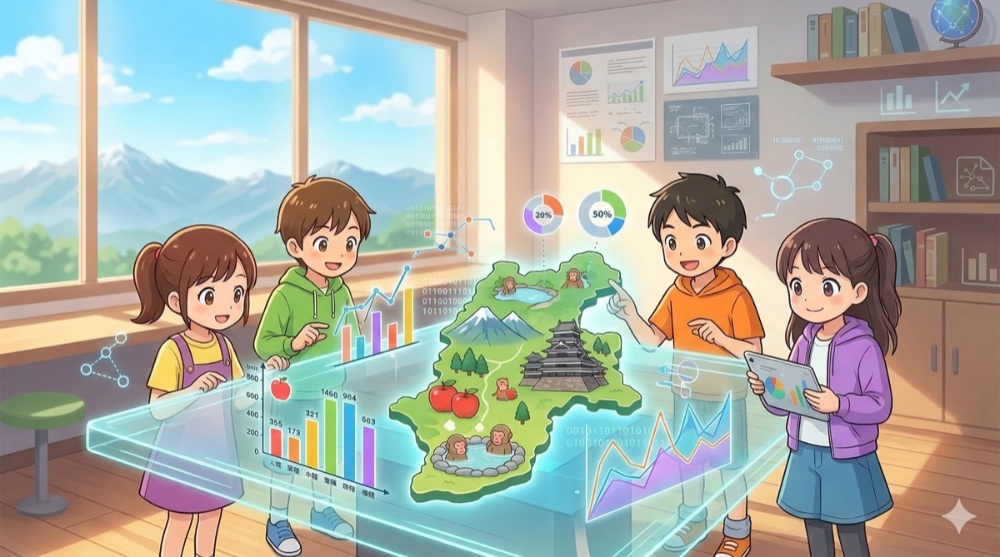

こどもコース
データを読んで、くらべて、考える。
3つのテーマがあるよ。どれからはじめてもOK！
登場キャラクター

でい太
スキー好きな
元気な男の子

ポン太
ホンドタヌキ。
でい太のアシスタント。

ものしり仙人
データに詳しい
物知り老人
🏔
長野県編
10レッスン ★☆☆ はじめての人はここからでい太のおじさんが住む麻績村（おみむら）から、人がどんどん減っている。 なぜだろう？本物の人口データで、いっしょに謎を解こう。
読む
くらべる
変化を追う
🐧
ペンギン研究所
8レッスン ★★☆ 長野県編とは別に進められるよ南極のペンギンを1ぴきずつはかった本物のデータ。 へいきん・ちらばりから、グラフにひそむ「わな」まで。
へいきん
ちらばり
ちらばりグラフ
グループ分け
💡
番外編
5話 ★☆☆ 1話ずつ読めるよごみのデータ、YouTube・インスタ・ゲームの「わな」、そして「ほんとうの自由ってなに？」。 身のまわりのしくみを見ぬく力をつけよう。
メディアリテラシー
お金のしくみ
てつがく
📮 質問（しつもん）・要望（ようぼう）をおくる
わからないことや、「こんなレッスンがほしい」などがあったら、ここから気軽におくってね。
フォームをひらく →